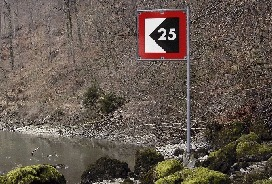

12
116
Que signifie ce signal?

-
Limitation de la largeur de la passe
-
Obligation de ne pas dépasser la vitesse indiquée en kilomètres heures (km/h)
-
Le chenal est limité; le chiffre porté sur le signal indique, en mètres, la distance à laquelle il convient que les bateaux se tiennent par rapport à la rive